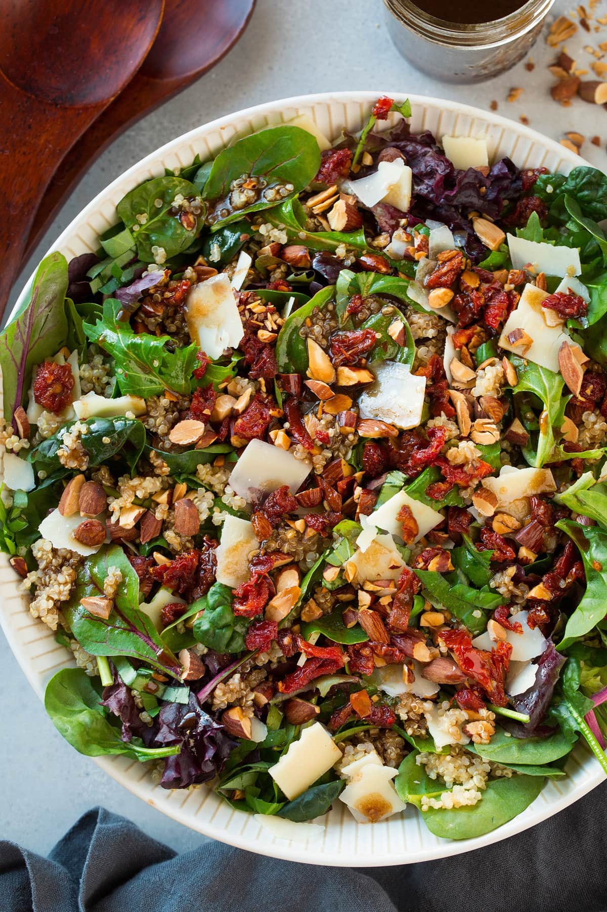

Salad. Sun-Dried Tomato, Spinach and Quinoa Salad
Refreshing and light!
Go to Entry 3 ✿
Ingredients
- 1 cup quinoa, rinsed in a fine-mesh colander
- ⅓ cup oil-packed sun-dried tomatoes, drained and chopped
- 2 cups roughly chopped fresh spinach or arugula
- ⅓ cup sliced almonds, ¼ teaspoon olive oil, salt to taste
- Lemon dressing: 2 tablespoons olive oil, 2 tablespoons lemon juice
- 2 cloves garlic, minced; 1 teaspoon Dijon mustard; ½ teaspoon salt; pinch of red pepper flakes; black pepper to taste

Instructions
- Combine quinoa and 2 cups water in a saucepan. Bring to a boil, then reduce heat and simmer until water is absorbed, about 15 minutes. Remove from heat, cover, and let rest 5 minutes.
- Prepare dressing: whisk olive oil, lemon juice, garlic, mustard, salt, and red pepper flakes. Add black pepper to taste.
- Toast the almonds: heat ¼ teaspoon olive oil in a skillet over medium heat. Add almonds and a pinch of salt; cook, stirring often, until golden and fragrant. Transfer to a bowl to cool.
- Fluff quinoa with a fork and transfer to bowl. Add dressing and toss. Add sun-dried tomatoes. Wait a few minutes before adding spinach so it doesn't wilt completely. Toss again and season to taste.